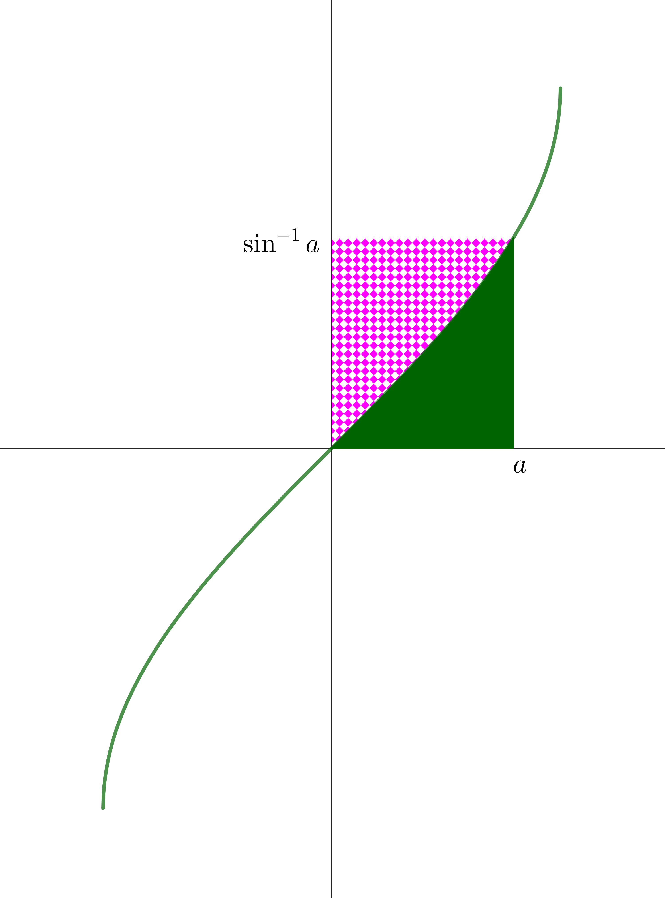

Welcome to Inverse Circular Functions: Part 4
This stage explores integrals of the inverse circular functions — \(\displaystyle{\int \arcsin x\,\mathrm{d}x}\), \(\displaystyle{\int \arccos x\,\mathrm{d}x}\), and \(\displaystyle{\int \arctan x\,\mathrm{d}x}\) — using geometric area arguments and integration by parts.
The area argument gives geometric insight; IBP then confirms the result algebraically!
 Dr Brian Brooks
Dr Brian Brooks
Mathematics InSight

What is the area of the shaded rectangle (pink and green together)?
What is the pink shaded area?
What is the green shaded area?
Use this result to find
\[\int_0^a \arcsin x\,\mathrm{d}x\]Since the integral is the green area,
\[\int_0^a \arcsin x\,\mathrm{d}x=a\arcsin a-1+\sqrt{1-a^2}\]Find \(\displaystyle{\displaystyle\int \arccos x\,\mathrm{d}x}\) using an area argument.

Use the area argument to find \(\displaystyle{\displaystyle\int \arctan x\,\mathrm{d}x}\).

Use integration by parts to find \[\displaystyle{\int\arcsin x\,\mathrm{d}x}\]
Use integration by parts to find \[\displaystyle{\int\arccos x\,\mathrm{d}x}\].
Use integration by parts to find \[\displaystyle{\int\arctan x\,\mathrm{d}x}\].
Well done on completing Part 4!
You have evaluated \(\displaystyle{\int \arcsin x\,\mathrm{d}x}\), \(\displaystyle{\int \arccos x\,\mathrm{d}x}\), and \(\displaystyle{\int \arctan x\,\mathrm{d}x}\) using geometric arguments and integration by parts.
Continue to the extension material in Part 5 (graphs of arcsec, arccosec, arccot).
Dr Brian Brooks
Mathematics InSight